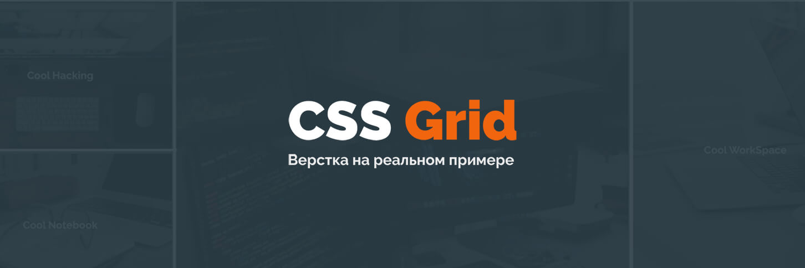
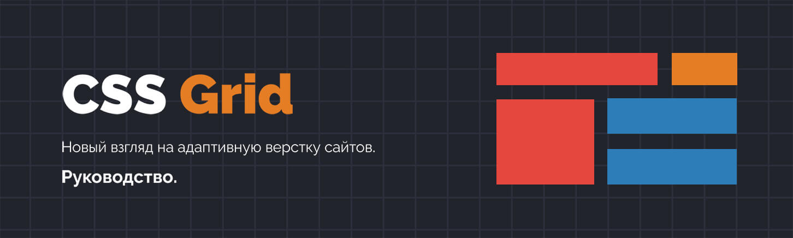

Курсы
Как создать тему для WordPress. Грамотная посадка верстки на WordPress (Right Way)
Быстрое создание красивых сайтов на WordPress. Layers Style Kit на реальном примере
Руководство по созданию тем на WordPress и StyleKit's с использованием Layers Framework

CSS Grid. Верстка реального сайта

CSS Grid. Подробное руководство
Слепая печать - это больно, но необходимо! (Урок и рекомендации)
Как создать красивую CSS анимацию. Подробный урок
Google для веб-разработчика. Как правильно искать информацию
Layers. Быстрая разработка сайтов на WordPress #1. Знакомство с Layers WP
Мастер-класс по созданию дизайна сайта салона красоты
Назад
5 из 15
Вперед